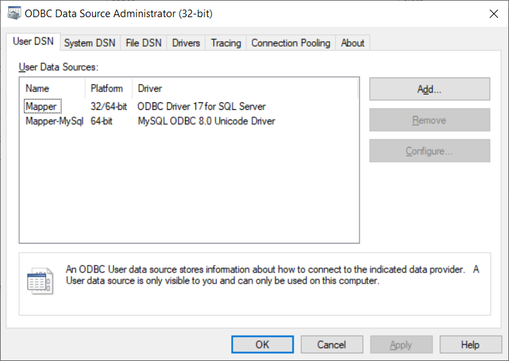
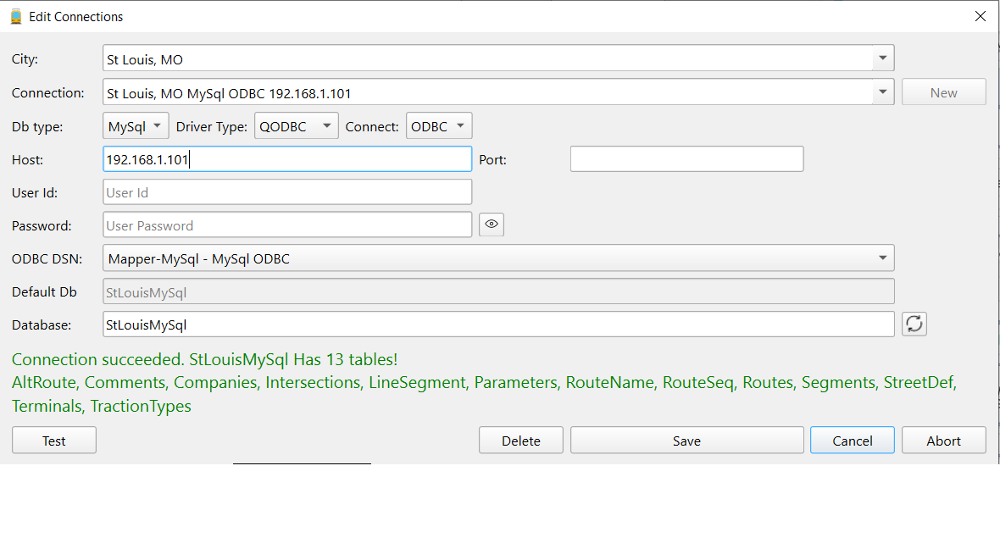
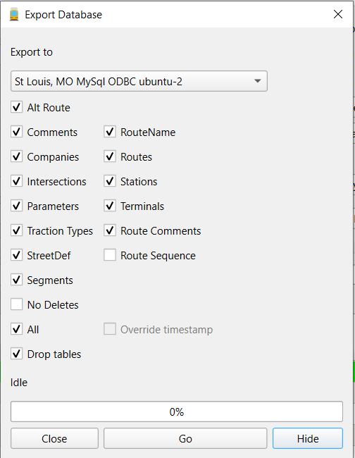

Using MySql, PostgreSQL or SQL Server databases
Mapper has an 'Export' function which provides for transferring data from Mapper's Sqlite3 database to a local or remote database such as MySql, PostgreSQL or Microsoft's Sql Server.
Data can also be exported to another Sqlite database on the same PC.
Currently. Mapper supports exporting to MySql, Microsoft Sql Server (MsSql) or PostgreSQL.
Prerequisites
MySql
Generally, to access a MySql database requires that MySql driver
plugins are configured and compiled for your version of Qt and
operating system. This is explained here.
MySql databases can also be accessed via ODBC. Given that it is somewhat difficult to compile the MySql Qt plugin,
it is easier to downlooad and use the PostgreSQL ODBC driver.
SQL Server
Accessing PostgreSQL and SQL Server databases requires ODBC. ODBC is supported
in Windows automatically but must be added for Unix and MacOS systems.
PostgreSQL
In order to access a PostgreSQL database, either the PostgreSQL client or the PostgreSQL ODBC driver
must be installed. In practice, the QPSQL direct driver rather than the PostgreSQL ODBC driver may be easier to use since
there isn't any way to use an ODBC DSN for any other database than the one it is configured for.
Other databases
Exporting to other databases such as Oracle can also be supported either thru the use of ODBC or a
Qt Sql plugin. However, while SQL commands
generally are interpreted the same for different databases, the commands for adding or modifying tables and views may require
explicit coding for a given type of database.
ODBC Windows
On windows, ODBC datasources must be defined with the ODBC
configuration utility that is part of Windows.

The above image lists two data sources, one for Sql Server, "Mapper" and one for MySql, "Mapper-MySql". You musr
create a datasource for each server that you will be accessing.
ODBC Unix
On Unix, it will be
necessary have installed the UnixODBC utilities to compile your own ODBC drivers.This is not
required for MySql or Ms Sql Server. However, one can download ODBC drivers for MySql and Microsoft Sql Server which automatically
include UnixODBC. (Note: MacOS utilizes a product, "iODBC" which is functionally equal to UnixODBC.)Examples are:
-
MySql download the "MySQL Connector/ODBC" package from the official MySQL website.
-
Sql Server
Download ODBC Driver for SQL Server. Both Windows and Linux versions can be downloaded.
Creating a MySql or SQL Server database.
Assuming that you have successfully created and tested the MySql
drivers or ODBC datasources, you must then create create a connection
to the server and a database on the target server. If no database exists on the server, you can either create
it with your servers administration utility or enter the database's name in the Database field. If the
database does not exist, you will be asked whether you wish to create it. In any case, once the database exists,
you are ready to populate it with data from one of the other connections for this city. If this is a new city
and no other database is available to export, you will have to use one of the scripts included with Mapper
to create the necessary table.

If a test is successful then click on the "Add/Update" button to add the connection to the city.
However, the SqlQuery dialog accessible from the Tools menu
could possibly be utilized. However, it is suggested that the database
be created with the utility associated with the database server, e.g,
PHPMyAdmin or MySql Workbench in the case of MySql or SQL Server
Management Studio in the case of SQL Server. These utilities will also
enable you to setup any necessary security necessary.
Once the Database has been created on the Server and assuming that you
have already created an populated your local Sqlite database, then
select Export Database from the Tools menu. This will display a dialog:

Make sure that the target database is selected in the "Export to"
combobox. Then click on the "All" checkbox which will select all
the applicable tables since we want to export all the tables. The "Drop
tables" checkbox should be checked if you want to do the export by first
dropping the old table on the target and then creating the table and
insert all the rows. If the checkbox is not checked, only database items that are newer will be exported.
If "Drop tables" is not checked, the export process will compare the
target's data to determine what to export. This option is very slow and
is not recommended.
Click on "Go" to start the export process.